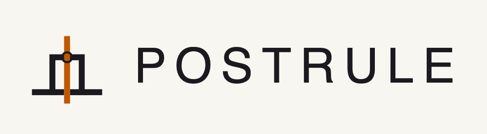
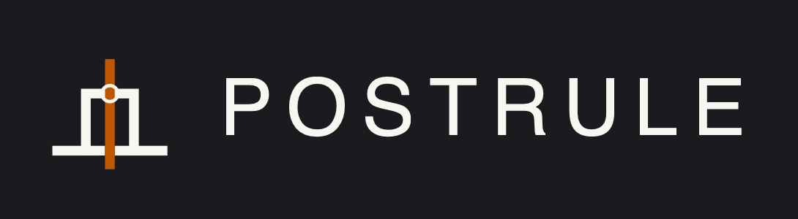
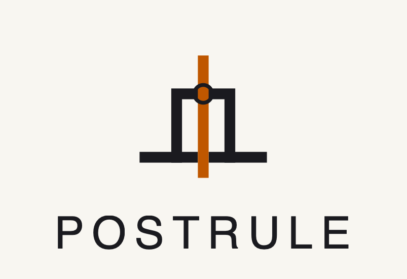
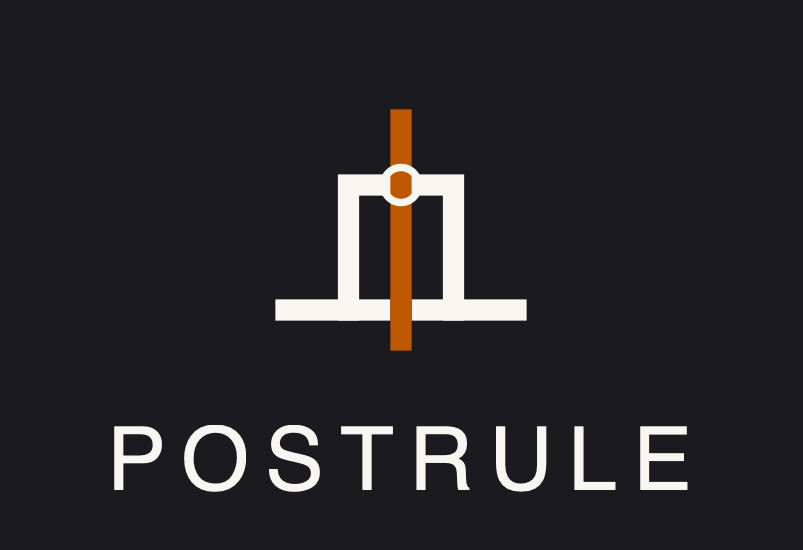
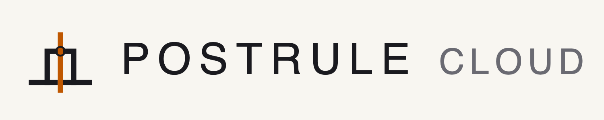
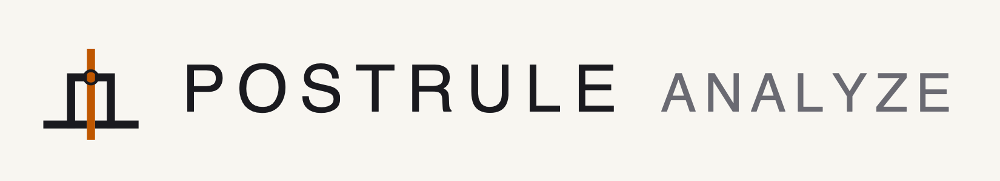
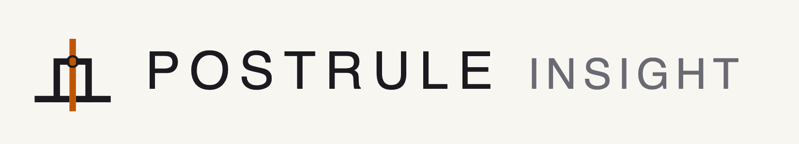
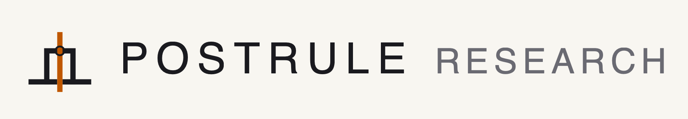

16 (favicon)
16 (favicon)Postrule · brand kit
All assets under brand/logo/. SVG masters + PNG exports
generated by _export.py. Canonical set mirrors the
B-Tree Labs parent brand kit structure.
Primary mark
16 (favicon) 32 (favicon)
32 (favicon) 96 · circle160 (GH avatar)260
96 · circle160 (GH avatar)260Dark ground
 96 · circle160260
96 · circle160260Monochrome · single-color for print / embroidery
 mono-light on ground
mono-light on ground mono-dark on graphite
mono-dark on graphiteRounded tile · favicon variant
Always a graphite rounded surface with the mark inverted inside. Holds "Postrule" at every size from 16 px to 512 px.
1632 64120180 (iOS)
64120180 (iOS) 256
256Wordmark lockups




Social card · 1200 × 630 (Open Graph)


GitHub repo social preview · 1280 × 640
Upload via the repo's Settings → Social preview. Shows when the repo URL is shared in chat / social / OG-aware contexts.

Twitter / X banner · 1500 × 500

LinkedIn company banner · 1128 × 191

Sub-brand lockups
Consistent POSTRULE [PRODUCT] pattern: parent wordmark at Space Grotesk Medium 108 px; sub-brand name at Regular 88 px in ink-soft. See brand/sub-brands.md for rules.




Animated mark
One-shot rising-accent animation (700 ms cubic-bezier) for first-render and phase-transition confirmation contexts. Loop variant for loading states only. Respects prefers-reduced-motion. See brand/motion.md.
 one-shot · 160
one-shot · 160 loop · 160
loop · 160Palette
Graphite
#1a1a1f
#1a1a1f
Off-white
#f8f6f1
#f8f6f1
Burnt orange
#BF5700
#BF5700
Ink soft
#6a6a72
#6a6a72
Rule
#d8d3c9
#d8d3c9
Ember deep
#8a3d00
#8a3d00
Ember wash
#f4e4d8
#f4e4d8
Notes
- SVG is the master; PNG exports are derived via
_export.pyfor contexts that require raster. - Wordmark PNGs render with whatever Space-Grotesk-like font is available to cairosvg at export time. For canonical wordmark PNGs, outline the text in a design tool (Inkscape: Path → Object to Path) before rasterizing.
- Usage rules, clear-space, minimum sizes, do's and don'ts:
brand/usage.md.